F3 恢复 6 个失败样例，原先成功的 71 对指标不变。F0 在共同成功样例上降低平均 CD/ECD，却没有恢复失败。当前证据支持两种修改各有收益，不能推出结构化反馈全面优于无反馈。
point2building_00032_z41aca4f400000f6c
v0.1.0 + 统一预处理：CD 2.0075 / ECD 2.5270 / NC 0.6414；F0 无结果反馈：CD 2.0156 / ECD 2.5249 / NC 0.6464；F3 结构化反馈：CD 2.0075 / ECD 2.5270 / NC 0.6414
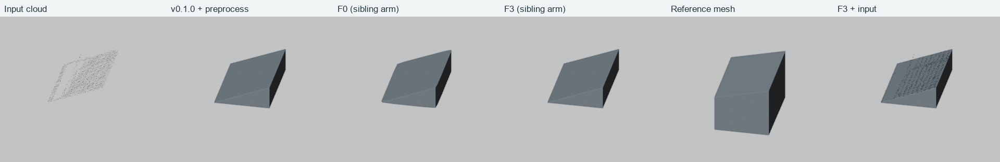
另外六个固定视角
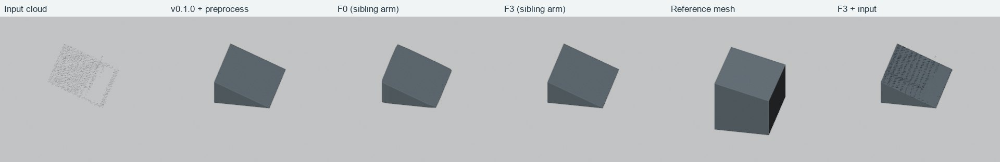
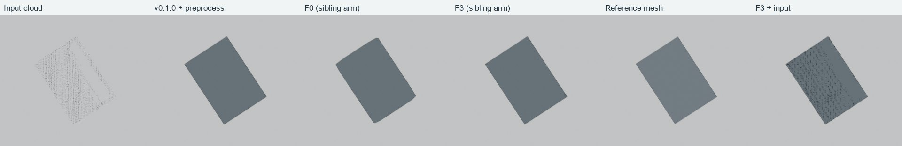
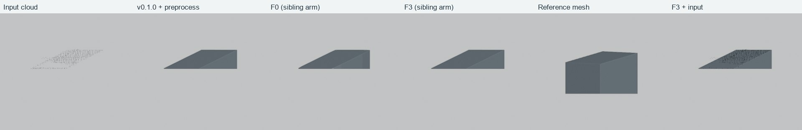
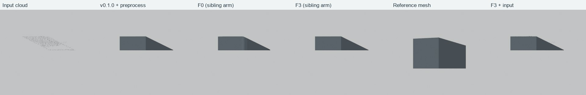
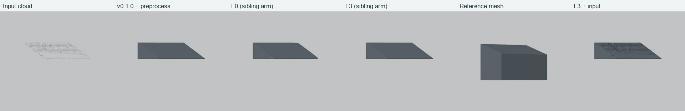
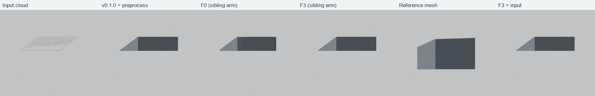
point2building_00089_z41ad26d300061d2a
v0.1.0 + 统一预处理：CD 2.1224 / ECD 2.7774 / NC 0.6447；F0 无结果反馈：CD 2.1433 / ECD 2.7999 / NC 0.6499；F3 结构化反馈：CD 2.1224 / ECD 2.7774 / NC 0.6447
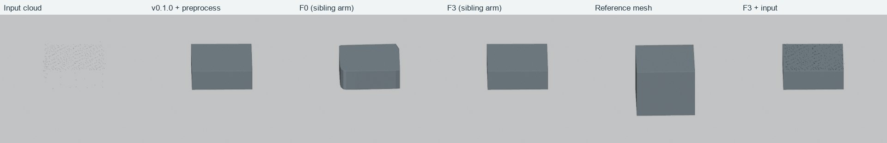
另外六个固定视角
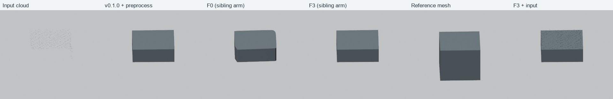
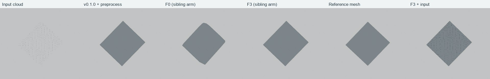
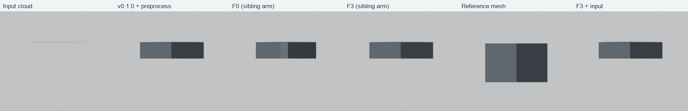
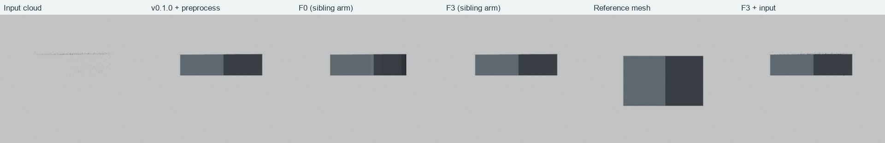
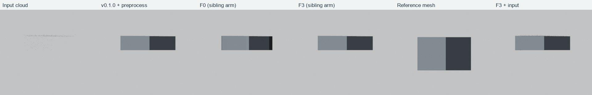
point2building_00612_z41afb9c5000028d4
v0.1.0 + 统一预处理：CD 1.7886 / ECD 2.6098 / NC 0.5433；F0 无结果反馈：CD 1.4566 / ECD 2.0525 / NC 0.6013；F3 结构化反馈：CD 1.7886 / ECD 2.6098 / NC 0.5433
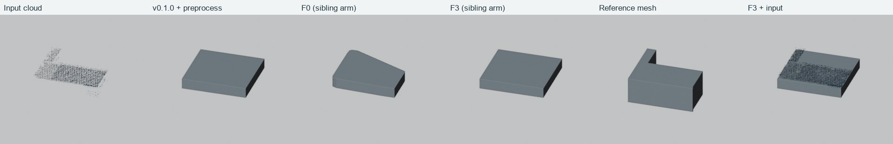
另外六个固定视角
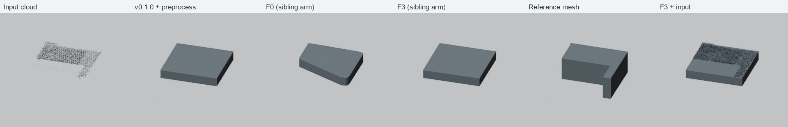
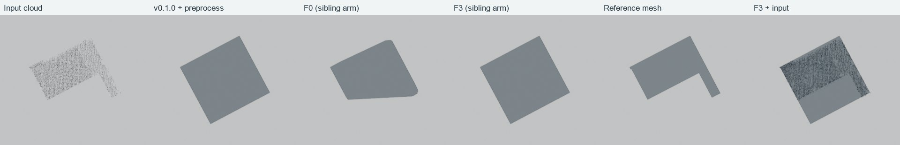
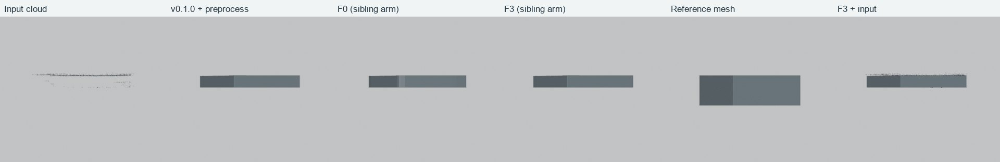
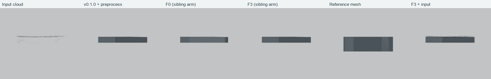
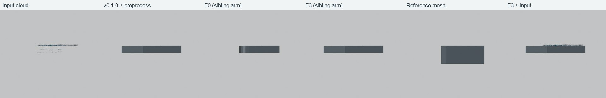
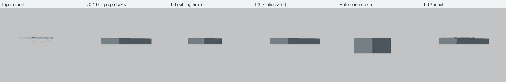
point2building_00828_z41aca4f400001a79
v0.1.0 + 统一预处理：CD 1.0023 / ECD 1.5900 / NC 0.7840；F0 无结果反馈：CD 1.0102 / ECD 1.5962 / NC 0.7908；F3 结构化反馈：CD 1.0023 / ECD 1.5900 / NC 0.7840
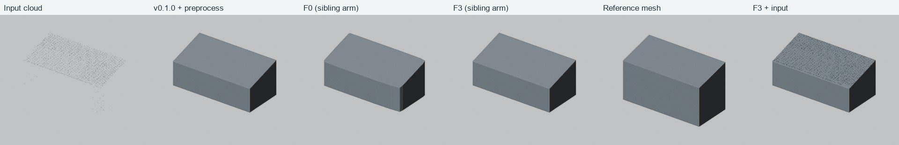
另外六个固定视角
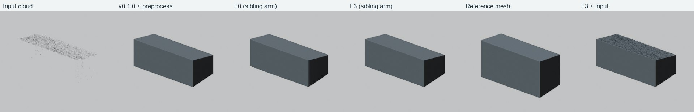
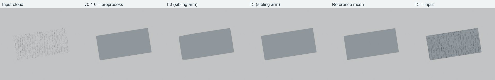
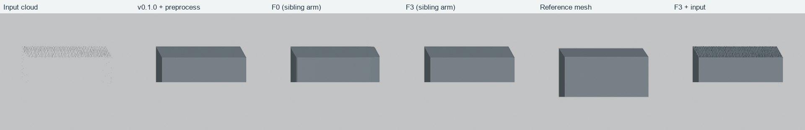
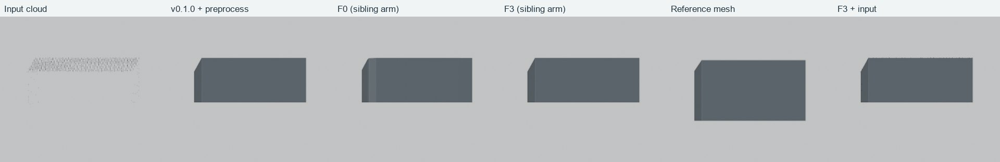
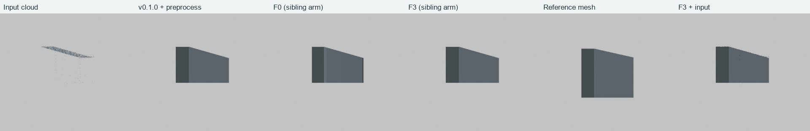
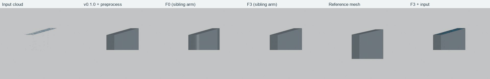
point2building_01020_z41af1c5900042690
v0.1.0 + 统一预处理：CD 0.7708 / ECD 1.1051 / NC 0.6785；F0 无结果反馈：CD 0.7686 / ECD 1.1126 / NC 0.6725；F3 结构化反馈：CD 0.7708 / ECD 1.1051 / NC 0.6785
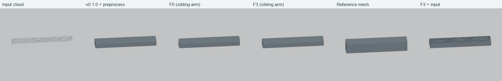
另外六个固定视角
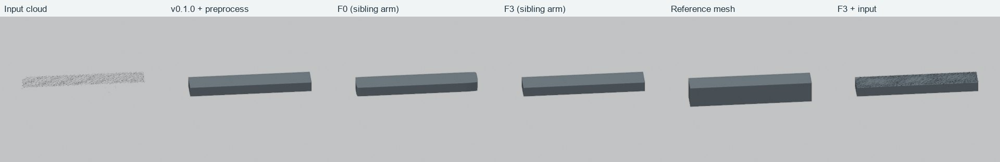
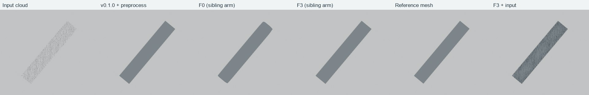
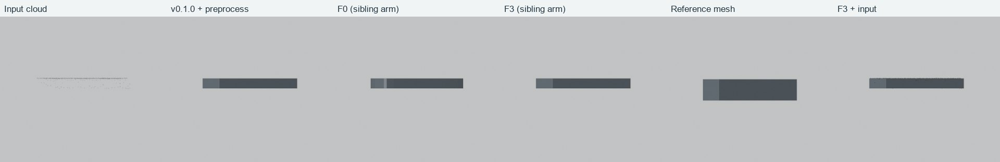
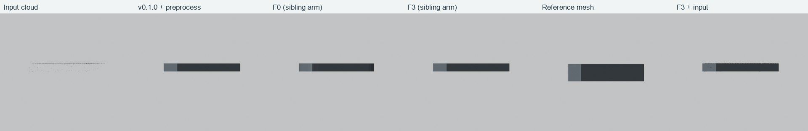
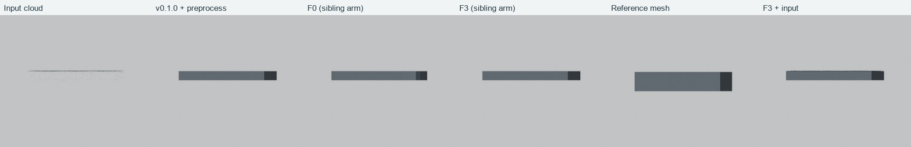
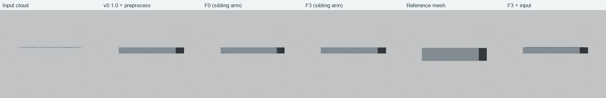
point2building_01182_z41ac39cc00001edd
v0.1.0 + 统一预处理：CD 1.0058 / ECD 1.3801 / NC 0.7519；F0 无结果反馈：CD 1.0417 / ECD 1.5063 / NC 0.7395；F3 结构化反馈：CD 1.0058 / ECD 1.3801 / NC 0.7519
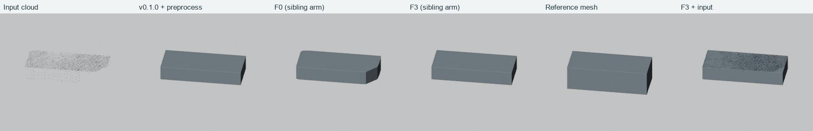
另外六个固定视角
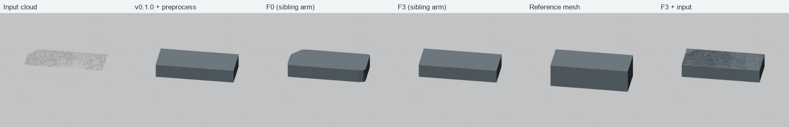
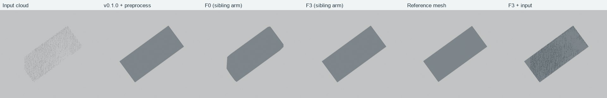
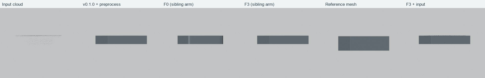
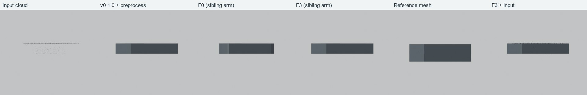
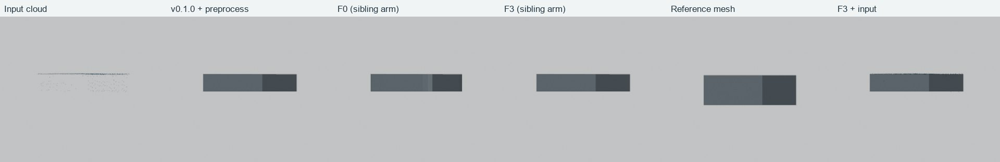
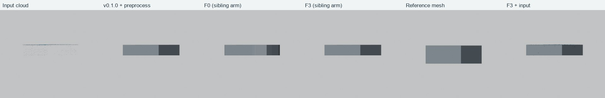
point2building_01226_z434cc37600000036
v0.1.0 + 统一预处理：CD 1.7168 / ECD 2.4885 / NC 0.6747；F0 无结果反馈：CD 1.7370 / ECD 2.4966 / NC 0.6835；F3 结构化反馈：CD 1.7168 / ECD 2.4885 / NC 0.6747
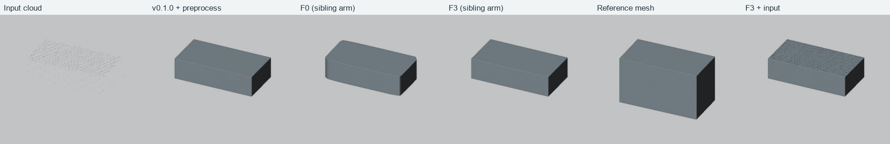
另外六个固定视角
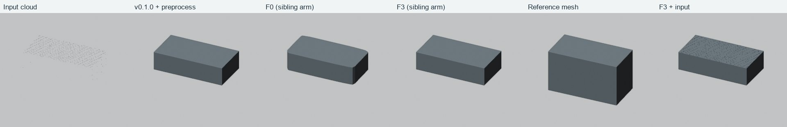
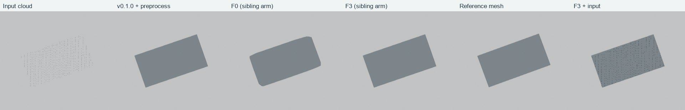
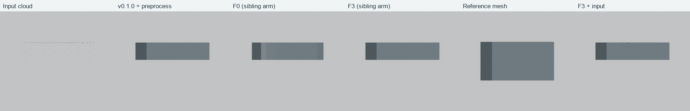
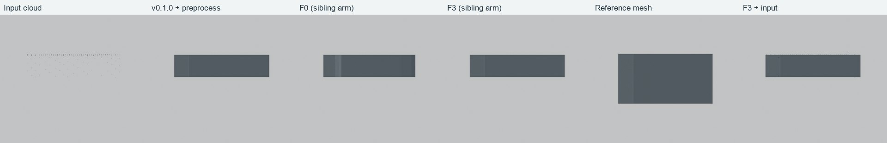
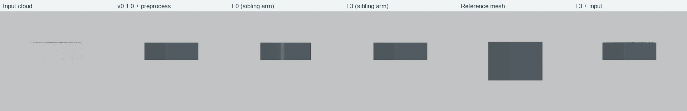
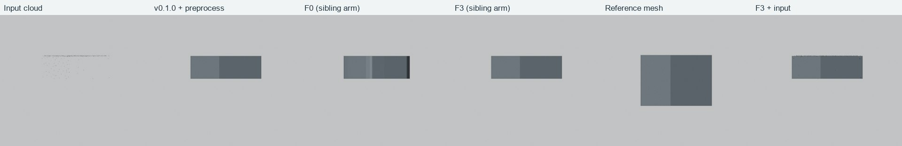
point2building_01231_z43d783460000001b
v0.1.0 + 统一预处理：CD 1.1828 / ECD 1.9185 / NC 0.7442；F0 无结果反馈：CD 1.1920 / ECD 2.2258 / NC 0.7621；F3 结构化反馈：CD 1.1828 / ECD 1.9185 / NC 0.7442
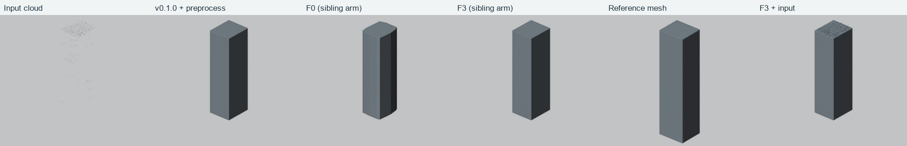
另外六个固定视角
point2building_01232_z43d783d80000001d
v0.1.0 + 统一预处理：失败；F0 无结果反馈：失败；F3 结构化反馈：CD 2.0442 / ECD 3.1284 / NC 0.6820
另外六个固定视角
point2building_01234_z43eaf3bb00000000
v0.1.0 + 统一预处理：CD 1.0701 / ECD 1.7230 / NC 0.7511；F0 无结果反馈：CD 1.0879 / ECD 1.7541 / NC 0.7529；F3 结构化反馈：CD 1.0701 / ECD 1.7230 / NC 0.7511
另外六个固定视角
point2building_01244_z45b11be700005ac6
v0.1.0 + 统一预处理：CD 1.0683 / ECD 1.5579 / NC 0.5894；F0 无结果反馈：CD 1.0227 / ECD 1.4163 / NC 0.6297；F3 结构化反馈：CD 1.0683 / ECD 1.5579 / NC 0.5894
另外六个固定视角
point2building_01496_z41acfcf900040363
v0.1.0 + 统一预处理：CD 2.2383 / ECD 3.2142 / NC 0.6292；F0 无结果反馈：CD 2.2165 / ECD 3.1487 / NC 0.6229；F3 结构化反馈：CD 2.2383 / ECD 3.2142 / NC 0.6292
另外六个固定视角
point2building_02062_z45b11b6e00004d35
v0.1.0 + 统一预处理：CD 1.1739 / ECD 1.8762 / NC 0.6907；F0 无结果反馈：CD 1.1389 / ECD 1.5728 / NC 0.7283；F3 结构化反馈：CD 1.1739 / ECD 1.8762 / NC 0.6907
另外六个固定视角
point2building_02073_z45b11b6f00004d43
v0.1.0 + 统一预处理：CD 2.0362 / ECD 2.5302 / NC 0.5636；F0 无结果反馈：CD 1.9913 / ECD 2.3040 / NC 0.6048；F3 结构化反馈：CD 2.0362 / ECD 2.5302 / NC 0.5636
另外六个固定视角
point2building_02308_z45b11b8c000050a2
v0.1.0 + 统一预处理：CD 1.2376 / ECD 1.6473 / NC 0.7161；F0 无结果反馈：CD 1.2333 / ECD 1.6342 / NC 0.7228；F3 结构化反馈：CD 1.2376 / ECD 1.6473 / NC 0.7161
另外六个固定视角
point2building_02420_z4631e26b00000002
v0.1.0 + 统一预处理：CD 0.4160 / ECD 0.5011 / NC 0.8543；F0 无结果反馈：CD 0.4357 / ECD 0.5671 / NC 0.8781；F3 结构化反馈：CD 0.4160 / ECD 0.5011 / NC 0.8543
另外六个固定视角
point2building_02648_z478b924900000293
v0.1.0 + 统一预处理：CD 0.9769 / ECD 1.5502 / NC 0.8441；F0 无结果反馈：CD 1.0186 / ECD 1.7306 / NC 0.8540；F3 结构化反馈：CD 0.9769 / ECD 1.5502 / NC 0.8441
另外六个固定视角
point2building_02691_z45b11c0900005eba
v0.1.0 + 统一预处理：CD 1.9280 / ECD 3.2294 / NC 0.6458；F0 无结果反馈：CD 1.8731 / ECD 3.1464 / NC 0.6905；F3 结构化反馈：CD 1.9280 / ECD 3.2294 / NC 0.6458
另外六个固定视角
point2building_02762_z478b924b00000309
v0.1.0 + 统一预处理：CD 1.3769 / ECD 2.1324 / NC 0.7503；F0 无结果反馈：CD 1.3727 / ECD 2.0649 / NC 0.7532；F3 结构化反馈：CD 1.3769 / ECD 2.1324 / NC 0.7503
另外六个固定视角
point2building_02842_z478b924d00000360
v0.1.0 + 统一预处理：CD 0.8590 / ECD 1.0447 / NC 0.7226；F0 无结果反馈：CD 0.9224 / ECD 1.1920 / NC 0.7231；F3 结构化反馈：CD 0.8590 / ECD 1.0447 / NC 0.7226
另外六个固定视角
point2building_02888_z5c37184f8d8a0056
v0.1.0 + 统一预处理：CD 2.4650 / ECD 3.3996 / NC 0.4775；F0 无结果反馈：CD 2.3241 / ECD 3.0734 / NC 0.5211；F3 结构化反馈：CD 2.4650 / ECD 3.3996 / NC 0.4775
另外六个固定视角
point2building_02926_z478b9252000004a9
v0.1.0 + 统一预处理：CD 2.3025 / ECD 3.0136 / NC 0.5800；F0 无结果反馈：CD 2.3733 / ECD 3.1388 / NC 0.5899；F3 结构化反馈：CD 2.3025 / ECD 3.0136 / NC 0.5800
另外六个固定视角
point2building_03024_z4b29d97200000000
v0.1.0 + 统一预处理：CD 0.7012 / ECD 1.1280 / NC 0.6535；F0 无结果反馈：CD 0.6784 / ECD 1.0396 / NC 0.6687；F3 结构化反馈：CD 0.7012 / ECD 1.1280 / NC 0.6535
另外六个固定视角
point2building_03060_z4cd103de00000004
v0.1.0 + 统一预处理：CD 0.2053 / ECD 0.4082 / NC 0.8550；F0 无结果反馈：CD 0.1954 / ECD 0.3141 / NC 0.8746；F3 结构化反馈：CD 0.2053 / ECD 0.4082 / NC 0.8550
另外六个固定视角
point2building_03096_z5061a3c42f350000
v0.1.0 + 统一预处理：CD 0.5038 / ECD 0.5729 / NC 0.8632；F0 无结果反馈：CD 0.5127 / ECD 0.5696 / NC 0.8898；F3 结构化反馈：CD 0.5038 / ECD 0.5729 / NC 0.8632
另外六个固定视角
point2building_03120_z47050adb000005fd
v0.1.0 + 统一预处理：CD 0.9273 / ECD 1.2680 / NC 0.8049；F0 无结果反馈：CD 0.9183 / ECD 1.2749 / NC 0.8048；F3 结构化反馈：CD 0.9273 / ECD 1.2680 / NC 0.8049
另外六个固定视角
point2building_03177_z57b4146355ea0033
v0.1.0 + 统一预处理：CD 1.3804 / ECD 1.8366 / NC 0.6546；F0 无结果反馈：CD 1.3807 / ECD 1.8324 / NC 0.6537；F3 结构化反馈：CD 1.3804 / ECD 1.8366 / NC 0.6546
另外六个固定视角
point2building_03215_z47050ae1000007c1
v0.1.0 + 统一预处理：CD 3.8250 / ECD 4.4579 / NC 0.5678；F0 无结果反馈：CD 3.8264 / ECD 4.4769 / NC 0.5733；F3 结构化反馈：CD 3.8250 / ECD 4.4579 / NC 0.5678
另外六个固定视角
point2building_03331_z4c11dac00000001b
v0.1.0 + 统一预处理：CD 0.1457 / ECD 0.1605 / NC 0.8934；F0 无结果反馈：CD 0.1485 / ECD 0.1626 / NC 0.9127；F3 结构化反馈：CD 0.1457 / ECD 0.1605 / NC 0.8934
另外六个固定视角
point2building_03541_z54fd6d3616b10066
v0.1.0 + 统一预处理：CD 1.3618 / ECD 1.9657 / NC 0.7443；F0 无结果反馈：CD 1.3685 / ECD 1.8998 / NC 0.7477；F3 结构化反馈：CD 1.3618 / ECD 1.9657 / NC 0.7443
另外六个固定视角
point2building_03584_z45b11bd100005843
v0.1.0 + 统一预处理：CD 2.7001 / ECD 3.9055 / NC 0.5676；F0 无结果反馈：CD 2.5219 / ECD 3.3833 / NC 0.6237；F3 结构化反馈：CD 2.7001 / ECD 3.9055 / NC 0.5676
另外六个固定视角
point2building_03749_z4756d98a00000752
v0.1.0 + 统一预处理：CD 0.7124 / ECD 0.9030 / NC 0.8393；F0 无结果反馈：CD 0.7161 / ECD 0.8693 / NC 0.8463；F3 结构化反馈：CD 0.7124 / ECD 0.9030 / NC 0.8393
另外六个固定视角
point2building_04146_z54feb0f4c2d60023
v0.1.0 + 统一预处理：CD 1.3358 / ECD 2.0603 / NC 0.7528；F0 无结果反馈：CD 1.3056 / ECD 2.0321 / NC 0.7568；F3 结构化反馈：CD 1.3358 / ECD 2.0603 / NC 0.7528
另外六个固定视角
point2building_04198_z4cf7a30100000000
v0.1.0 + 统一预处理：CD 0.3545 / ECD 0.5067 / NC 0.8741；F0 无结果反馈：CD 0.3527 / ECD 0.4238 / NC 0.9009；F3 结构化反馈：CD 0.3545 / ECD 0.5067 / NC 0.8741
另外六个固定视角
point2building_04264_z463f41f7000004a3
v0.1.0 + 统一预处理：CD 1.7711 / ECD 2.2703 / NC 0.6457；F0 无结果反馈：CD 1.7615 / ECD 2.2321 / NC 0.6600；F3 结构化反馈：CD 1.7711 / ECD 2.2703 / NC 0.6457
另外六个固定视角
point2building_04435_z5aa795dc967900fa
v0.1.0 + 统一预处理：CD 1.2387 / ECD 2.3268 / NC 0.6172；F0 无结果反馈：CD 1.0265 / ECD 1.6649 / NC 0.6614；F3 结构化反馈：CD 1.2387 / ECD 2.3268 / NC 0.6172
另外六个固定视角
point2building_04499_z4961a69d00000000
v0.1.0 + 统一预处理：CD 2.3572 / ECD 3.3192 / NC 0.4400；F0 无结果反馈：CD 2.1260 / ECD 2.6870 / NC 0.4963；F3 结构化反馈：CD 2.3572 / ECD 3.3192 / NC 0.4400
另外六个固定视角
point2building_04700_z5cd2c7b8e3ae0027
v0.1.0 + 统一预处理：CD 1.0412 / ECD 1.6114 / NC 0.7404；F0 无结果反馈：CD 0.8517 / ECD 1.0867 / NC 0.8136；F3 结构化反馈：CD 1.0412 / ECD 1.6114 / NC 0.7404
另外六个固定视角
polygnn_mini_DEBY_LOD2_104575493
v0.1.0 + 统一预处理：CD 1.0371 / ECD 2.1649 / NC 0.6539；F0 无结果反馈：CD 0.6416 / ECD 1.1153 / NC 0.7629；F3 结构化反馈：CD 1.0371 / ECD 2.1649 / NC 0.6539
另外六个固定视角
polygnn_mini_DEBY_LOD2_18272204
v0.1.0 + 统一预处理：CD 0.2385 / ECD 0.2315 / NC 0.9748；F0 无结果反馈：CD 0.2353 / ECD 0.2120 / NC 0.9744；F3 结构化反馈：CD 0.2385 / ECD 0.2315 / NC 0.9748
另外六个固定视角
polygnn_mini_DEBY_LOD2_21464190
v0.1.0 + 统一预处理：失败；F0 无结果反馈：失败；F3 结构化反馈：CD 0.7965 / ECD 1.5111 / NC 0.8333
另外六个固定视角
polygnn_mini_DEBY_LOD2_42758236
v0.1.0 + 统一预处理：CD 0.3507 / ECD 0.6570 / NC 0.9547；F0 无结果反馈：CD 0.3340 / ECD 0.5834 / NC 0.9557；F3 结构化反馈：CD 0.3507 / ECD 0.6570 / NC 0.9547
另外六个固定视角
polygnn_mini_DEBY_LOD2_4322128
v0.1.0 + 统一预处理：CD 0.2478 / ECD 0.4108 / NC 0.9411；F0 无结果反馈：CD 0.2034 / ECD 0.2587 / NC 0.9610；F3 结构化反馈：CD 0.2478 / ECD 0.4108 / NC 0.9411
另外六个固定视角
polygnn_mini_DEBY_LOD2_4374954
v0.1.0 + 统一预处理：CD 0.1788 / ECD 0.0967 / NC 0.9761；F0 无结果反馈：CD 0.1773 / ECD 0.0922 / NC 0.9813；F3 结构化反馈：CD 0.1788 / ECD 0.0967 / NC 0.9761
另外六个固定视角
polygnn_mini_DEBY_LOD2_4473468
v0.1.0 + 统一预处理：CD 0.3543 / ECD 0.5837 / NC 0.9057；F0 无结果反馈：CD 0.3458 / ECD 0.5414 / NC 0.9086；F3 结构化反馈：CD 0.3543 / ECD 0.5837 / NC 0.9057
另外六个固定视角
polygnn_mini_DEBY_LOD2_4616699
v0.1.0 + 统一预处理：CD 0.2546 / ECD 0.2558 / NC 0.9697；F0 无结果反馈：CD 0.2451 / ECD 0.2173 / NC 0.9731；F3 结构化反馈：CD 0.2546 / ECD 0.2558 / NC 0.9697
另外六个固定视角
polygnn_mini_DEBY_LOD2_4620050
v0.1.0 + 统一预处理：CD 0.2805 / ECD 0.3028 / NC 0.9706；F0 无结果反馈：CD 0.2686 / ECD 0.2771 / NC 0.9703；F3 结构化反馈：CD 0.2805 / ECD 0.3028 / NC 0.9706
另外六个固定视角
polygnn_mini_DEBY_LOD2_4672969
v0.1.0 + 统一预处理：失败；F0 无结果反馈：失败；F3 结构化反馈：失败
另外六个固定视角
polygnn_mini_DEBY_LOD2_4677715
v0.1.0 + 统一预处理：CD 0.3115 / ECD 0.3405 / NC 0.9471；F0 无结果反馈：CD 0.1906 / ECD 0.1288 / NC 0.9795；F3 结构化反馈：CD 0.3115 / ECD 0.3405 / NC 0.9471
另外六个固定视角
polygnn_mini_DEBY_LOD2_4681422
v0.1.0 + 统一预处理：CD 0.2026 / ECD 0.3090 / NC 0.9585；F0 无结果反馈：CD 0.2040 / ECD 0.3041 / NC 0.9580；F3 结构化反馈：CD 0.2026 / ECD 0.3090 / NC 0.9585
另外六个固定视角
polygnn_mini_DEBY_LOD2_4717633
v0.1.0 + 统一预处理：CD 0.3176 / ECD 0.3933 / NC 0.9577；F0 无结果反馈：CD 0.2476 / ECD 0.2608 / NC 0.9704；F3 结构化反馈：CD 0.3176 / ECD 0.3933 / NC 0.9577
另外六个固定视角
polygnn_mini_DEBY_LOD2_4731695
v0.1.0 + 统一预处理：CD 0.1869 / ECD 0.1081 / NC 0.9740；F0 无结果反馈：CD 0.1874 / ECD 0.0993 / NC 0.9739；F3 结构化反馈：CD 0.1869 / ECD 0.1081 / NC 0.9740
另外六个固定视角
polygnn_mini_DEBY_LOD2_4735908
v0.1.0 + 统一预处理：CD 0.1865 / ECD 0.1058 / NC 0.9761；F0 无结果反馈：CD 0.1835 / ECD 0.1126 / NC 0.9793；F3 结构化反馈：CD 0.1865 / ECD 0.1058 / NC 0.9761
另外六个固定视角
polygnn_mini_DEBY_LOD2_4768530
v0.1.0 + 统一预处理：CD 0.7193 / ECD 1.4520 / NC 0.8307；F0 无结果反馈：CD 0.5201 / ECD 0.8906 / NC 0.8900；F3 结构化反馈：CD 0.7193 / ECD 1.4520 / NC 0.8307
另外六个固定视角
polygnn_mini_DEBY_LOD2_4773826
v0.1.0 + 统一预处理：CD 0.9095 / ECD 1.7915 / NC 0.8449；F0 无结果反馈：CD 0.2281 / ECD 0.3850 / NC 0.9615；F3 结构化反馈：CD 0.9095 / ECD 1.7915 / NC 0.8449
另外六个固定视角
polygnn_mini_DEBY_LOD2_4827110
v0.1.0 + 统一预处理：CD 0.1823 / ECD 0.0788 / NC 0.9779；F0 无结果反馈：CD 0.1829 / ECD 0.0731 / NC 0.9802；F3 结构化反馈：CD 0.1823 / ECD 0.0788 / NC 0.9779
另外六个固定视角
polygnn_mini_DEBY_LOD2_4833066
v0.1.0 + 统一预处理：失败；F0 无结果反馈：失败；F3 结构化反馈：CD 0.3212 / ECD 0.3991 / NC 0.9655
另外六个固定视角
polygnn_mini_DEBY_LOD2_4862505
v0.1.0 + 统一预处理：CD 0.4870 / ECD 1.1381 / NC 0.8576；F0 无结果反馈：CD 0.2587 / ECD 0.4318 / NC 0.9292；F3 结构化反馈：CD 0.4870 / ECD 1.1381 / NC 0.8576
另外六个固定视角
polygnn_mini_DEBY_LOD2_4869536
v0.1.0 + 统一预处理：失败；F0 无结果反馈：失败；F3 结构化反馈：CD 0.3421 / ECD 0.4459 / NC 0.9543
另外六个固定视角
polygnn_mini_DEBY_LOD2_4870013
v0.1.0 + 统一预处理：CD 0.2362 / ECD 0.2493 / NC 0.9701；F0 无结果反馈：CD 0.2308 / ECD 0.2254 / NC 0.9702；F3 结构化反馈：CD 0.2362 / ECD 0.2493 / NC 0.9701
另外六个固定视角
polygnn_mini_DEBY_LOD2_4901641
v0.1.0 + 统一预处理：CD 0.4952 / ECD 1.0210 / NC 0.8951；F0 无结果反馈：CD 0.3229 / ECD 0.5126 / NC 0.9475；F3 结构化反馈：CD 0.4952 / ECD 1.0210 / NC 0.8951
另外六个固定视角
polygnn_mini_DEBY_LOD2_4914914
v0.1.0 + 统一预处理：CD 0.5500 / ECD 1.4385 / NC 0.8120；F0 无结果反馈：CD 0.4074 / ECD 1.0264 / NC 0.8587；F3 结构化反馈：CD 0.5500 / ECD 1.4385 / NC 0.8120
另外六个固定视角
polygnn_mini_DEBY_LOD2_4948910
v0.1.0 + 统一预处理：CD 0.3413 / ECD 0.4950 / NC 0.9166；F0 无结果反馈：CD 0.2466 / ECD 0.2991 / NC 0.9506；F3 结构化反馈：CD 0.3413 / ECD 0.4950 / NC 0.9166
另外六个固定视角
polygnn_mini_DEBY_LOD2_4967349
v0.1.0 + 统一预处理：CD 0.2484 / ECD 0.2013 / NC 0.9634；F0 无结果反馈：CD 0.2499 / ECD 0.2134 / NC 0.9647；F3 结构化反馈：CD 0.2484 / ECD 0.2013 / NC 0.9634
另外六个固定视角
polygnn_mini_DEBY_LOD2_5004510
v0.1.0 + 统一预处理：CD 0.2030 / ECD 0.1709 / NC 0.9665；F0 无结果反馈：CD 0.1802 / ECD 0.1245 / NC 0.9735；F3 结构化反馈：CD 0.2030 / ECD 0.1709 / NC 0.9665
另外六个固定视角
polygnn_mini_DEBY_LOD2_5055513
v0.1.0 + 统一预处理：CD 0.1661 / ECD 0.0974 / NC 0.9793；F0 无结果反馈：CD 0.1638 / ECD 0.0816 / NC 0.9801；F3 结构化反馈：CD 0.1661 / ECD 0.0974 / NC 0.9793
另外六个固定视角
polygnn_mini_DEBY_LOD2_5056245
v0.1.0 + 统一预处理：CD 1.2779 / ECD 3.1209 / NC 0.6503；F0 无结果反馈：CD 0.5966 / ECD 1.4017 / NC 0.7676；F3 结构化反馈：CD 1.2779 / ECD 3.1209 / NC 0.6503
另外六个固定视角
polygnn_mini_DEBY_LOD2_5056401
v0.1.0 + 统一预处理：CD 0.5836 / ECD 1.5687 / NC 0.6448；F0 无结果反馈：CD 0.5771 / ECD 1.4662 / NC 0.6548；F3 结构化反馈：CD 0.5836 / ECD 1.5687 / NC 0.6448
另外六个固定视角
polygnn_mini_DEBY_LOD2_5092970
v0.1.0 + 统一预处理：CD 0.1860 / ECD 0.3066 / NC 0.9156；F0 无结果反馈：CD 0.1509 / ECD 0.1887 / NC 0.9420；F3 结构化反馈：CD 0.1860 / ECD 0.3066 / NC 0.9156
另外六个固定视角
polygnn_mini_DEBY_LOD2_5100005
v0.1.0 + 统一预处理：失败；F0 无结果反馈：失败；F3 结构化反馈：CD 0.4947 / ECD 0.8710 / NC 0.8726
另外六个固定视角
polygnn_mini_DEBY_LOD2_5137190
v0.1.0 + 统一预处理：CD 0.1523 / ECD 0.0992 / NC 0.9713；F0 无结果反馈：CD 0.1469 / ECD 0.0756 / NC 0.9742；F3 结构化反馈：CD 0.1523 / ECD 0.0992 / NC 0.9713
另外六个固定视角
polygnn_mini_DEBY_LOD2_5142315
v0.1.0 + 统一预处理：CD 0.1833 / ECD 0.0967 / NC 0.9790；F0 无结果反馈：CD 0.1801 / ECD 0.0826 / NC 0.9802；F3 结构化反馈：CD 0.1833 / ECD 0.0967 / NC 0.9790
另外六个固定视角
polygnn_mini_DEBY_LOD2_5184618
v0.1.0 + 统一预处理：CD 0.6492 / ECD 1.7534 / NC 0.7481；F0 无结果反馈：CD 0.4528 / ECD 0.8307 / NC 0.8308；F3 结构化反馈：CD 0.6492 / ECD 1.7534 / NC 0.7481
另外六个固定视角
polygnn_mini_DEBY_LOD2_5184797
v0.1.0 + 统一预处理：CD 0.2049 / ECD 0.3248 / NC 0.9310；F0 无结果反馈：CD 0.1712 / ECD 0.1904 / NC 0.9506；F3 结构化反馈：CD 0.2049 / ECD 0.3248 / NC 0.9310
另外六个固定视角
polygnn_mini_DEBY_LOD2_5271709
v0.1.0 + 统一预处理：CD 0.2013 / ECD 0.2099 / NC 0.9651；F0 无结果反馈：CD 0.1860 / ECD 0.1941 / NC 0.9696；F3 结构化反馈：CD 0.2013 / ECD 0.2099 / NC 0.9651
另外六个固定视角
polygnn_mini_DEBY_LOD2_5273475
v0.1.0 + 统一预处理：失败；F0 无结果反馈：失败；F3 结构化反馈：CD 0.2053 / ECD 0.1989 / NC 0.9703
另外六个固定视角
polygnn_mini_DEBY_LOD2_8573782
v0.1.0 + 统一预处理：CD 0.3770 / ECD 1.1203 / NC 0.7351；F0 无结果反馈：CD 0.3747 / ECD 1.0944 / NC 0.7376；F3 结构化反馈：CD 0.3770 / ECD 1.1203 / NC 0.7351
另外六个固定视角
polygnn_mini_DEBY_LOD2_8573862
v0.1.0 + 统一预处理：CD 1.6997 / ECD 3.4256 / NC 0.6022；F0 无结果反馈：CD 1.0840 / ECD 1.9552 / NC 0.6880；F3 结构化反馈：CD 1.6997 / ECD 3.4256 / NC 0.6022
另外六个固定视角
point2building_00612_z41afb9c5000028d4
v0.1.0 + 统一预处理：CD 1.7886 / ECD 2.6098 / NC 0.5433；原始 Harness：CD 1.7886 / ECD 2.6098 / NC 0.5433；演化 Harness：CD 1.7886 / ECD 2.6098 / NC 0.5433
另外六个固定视角
point2building_00828_z41aca4f400001a79
v0.1.0 + 统一预处理：CD 1.0023 / ECD 1.5900 / NC 0.7840；原始 Harness：CD 1.0023 / ECD 1.5900 / NC 0.7840；演化 Harness：CD 1.0023 / ECD 1.5900 / NC 0.7840
另外六个固定视角
point2building_01020_z41af1c5900042690
v0.1.0 + 统一预处理：CD 0.7708 / ECD 1.1051 / NC 0.6785；原始 Harness：CD 0.7708 / ECD 1.1051 / NC 0.6785；演化 Harness：CD 0.7708 / ECD 1.1051 / NC 0.6785
另外六个固定视角
point2building_01182_z41ac39cc00001edd
v0.1.0 + 统一预处理：CD 1.0058 / ECD 1.3801 / NC 0.7519；原始 Harness：CD 1.0058 / ECD 1.3801 / NC 0.7519；演化 Harness：CD 1.0058 / ECD 1.3801 / NC 0.7519
另外六个固定视角
point2building_01231_z43d783460000001b
v0.1.0 + 统一预处理：CD 1.1828 / ECD 1.9185 / NC 0.7442；原始 Harness：CD 1.1828 / ECD 1.9185 / NC 0.7442；演化 Harness：CD 1.1828 / ECD 1.9185 / NC 0.7442
另外六个固定视角
point2building_01496_z41acfcf900040363
v0.1.0 + 统一预处理：CD 2.2383 / ECD 3.2142 / NC 0.6292；原始 Harness：CD 2.2383 / ECD 3.2142 / NC 0.6292；演化 Harness：CD 2.2383 / ECD 3.2142 / NC 0.6292
另外六个固定视角
point2building_02420_z4631e26b00000002
v0.1.0 + 统一预处理：CD 0.4160 / ECD 0.5011 / NC 0.8543；原始 Harness：CD 0.4160 / ECD 0.5011 / NC 0.8543；演化 Harness：CD 0.4160 / ECD 0.5011 / NC 0.8543
另外六个固定视角
point2building_02691_z45b11c0900005eba
v0.1.0 + 统一预处理：CD 1.9280 / ECD 3.2294 / NC 0.6458；原始 Harness：CD 1.9280 / ECD 3.2294 / NC 0.6458；演化 Harness：CD 1.9280 / ECD 3.2294 / NC 0.6458
另外六个固定视角
point2building_02762_z478b924b00000309
v0.1.0 + 统一预处理：CD 1.3769 / ECD 2.1324 / NC 0.7503；原始 Harness：CD 1.3769 / ECD 2.1324 / NC 0.7503；演化 Harness：CD 1.3769 / ECD 2.1324 / NC 0.7503
另外六个固定视角
point2building_02842_z478b924d00000360
v0.1.0 + 统一预处理：CD 0.8590 / ECD 1.0447 / NC 0.7226；原始 Harness：CD 0.8590 / ECD 1.0447 / NC 0.7226；演化 Harness：CD 0.8590 / ECD 1.0447 / NC 0.7226
另外六个固定视角
point2building_03120_z47050adb000005fd
v0.1.0 + 统一预处理：CD 0.9273 / ECD 1.2680 / NC 0.8049；原始 Harness：CD 0.9273 / ECD 1.2680 / NC 0.8049；演化 Harness：CD 0.9273 / ECD 1.2680 / NC 0.8049
另外六个固定视角
point2building_03541_z54fd6d3616b10066
v0.1.0 + 统一预处理：CD 1.3618 / ECD 1.9657 / NC 0.7443；原始 Harness：CD 1.3618 / ECD 1.9657 / NC 0.7443；演化 Harness：CD 1.3618 / ECD 1.9657 / NC 0.7443
另外六个固定视角
point2building_03749_z4756d98a00000752
v0.1.0 + 统一预处理：CD 0.7124 / ECD 0.9030 / NC 0.8393；原始 Harness：CD 0.7124 / ECD 0.9030 / NC 0.8393；演化 Harness：CD 0.7124 / ECD 0.9030 / NC 0.8393
另外六个固定视角
point2building_04264_z463f41f7000004a3
v0.1.0 + 统一预处理：CD 1.7711 / ECD 2.2703 / NC 0.6457；原始 Harness：CD 1.7711 / ECD 2.2703 / NC 0.6457；演化 Harness：CD 1.7711 / ECD 2.2703 / NC 0.6457
另外六个固定视角
polygnn_mini_DEBY_LOD2_104575493
v0.1.0 + 统一预处理：CD 1.0371 / ECD 2.1649 / NC 0.6539；原始 Harness：CD 1.0371 / ECD 2.1649 / NC 0.6539；演化 Harness：CD 1.0371 / ECD 2.1649 / NC 0.6539
另外六个固定视角
polygnn_mini_DEBY_LOD2_42758236
v0.1.0 + 统一预处理：CD 0.3507 / ECD 0.6570 / NC 0.9547；原始 Harness：CD 0.3507 / ECD 0.6570 / NC 0.9547；演化 Harness：CD 0.3507 / ECD 0.6570 / NC 0.9547
另外六个固定视角
polygnn_mini_DEBY_LOD2_4620050
v0.1.0 + 统一预处理：CD 0.2805 / ECD 0.3028 / NC 0.9706；原始 Harness：CD 0.2805 / ECD 0.3028 / NC 0.9706；演化 Harness：CD 0.2805 / ECD 0.3028 / NC 0.9706
另外六个固定视角
polygnn_mini_DEBY_LOD2_4672969
v0.1.0 + 统一预处理：失败；原始 Harness：失败；演化 Harness：失败
另外六个固定视角
polygnn_mini_DEBY_LOD2_4735908
v0.1.0 + 统一预处理：CD 0.1865 / ECD 0.1058 / NC 0.9761；原始 Harness：CD 0.1865 / ECD 0.1058 / NC 0.9761；演化 Harness：CD 0.1865 / ECD 0.1058 / NC 0.9761
另外六个固定视角
polygnn_mini_DEBY_LOD2_4833066
v0.1.0 + 统一预处理：失败；原始 Harness：失败；演化 Harness：失败
另外六个固定视角
polygnn_mini_DEBY_LOD2_4869536
v0.1.0 + 统一预处理：失败；原始 Harness：失败；演化 Harness：失败
另外六个固定视角
polygnn_mini_DEBY_LOD2_4870013
v0.1.0 + 统一预处理：CD 0.2362 / ECD 0.2493 / NC 0.9701；原始 Harness：CD 0.2362 / ECD 0.2493 / NC 0.9701；演化 Harness：CD 0.2362 / ECD 0.2493 / NC 0.9701
另外六个固定视角
polygnn_mini_DEBY_LOD2_4948910
v0.1.0 + 统一预处理：CD 0.3413 / ECD 0.4950 / NC 0.9166；原始 Harness：CD 0.3413 / ECD 0.4950 / NC 0.9166；演化 Harness：CD 0.3413 / ECD 0.4950 / NC 0.9166
另外六个固定视角
polygnn_mini_DEBY_LOD2_4967349
v0.1.0 + 统一预处理：CD 0.2484 / ECD 0.2013 / NC 0.9634；原始 Harness：CD 0.2484 / ECD 0.2013 / NC 0.9634；演化 Harness：CD 0.2484 / ECD 0.2013 / NC 0.9634
另外六个固定视角
polygnn_mini_DEBY_LOD2_5004510
v0.1.0 + 统一预处理：CD 0.2030 / ECD 0.1709 / NC 0.9665；原始 Harness：CD 0.2030 / ECD 0.1709 / NC 0.9665；演化 Harness：CD 0.2030 / ECD 0.1709 / NC 0.9665
另外六个固定视角
polygnn_mini_DEBY_LOD2_5055513
v0.1.0 + 统一预处理：CD 0.1661 / ECD 0.0974 / NC 0.9793；原始 Harness：CD 0.1661 / ECD 0.0974 / NC 0.9793；演化 Harness：CD 0.1661 / ECD 0.0974 / NC 0.9793
另外六个固定视角
polygnn_mini_DEBY_LOD2_5142315
v0.1.0 + 统一预处理：CD 0.1833 / ECD 0.0967 / NC 0.9790；原始 Harness：CD 0.1833 / ECD 0.0967 / NC 0.9790；演化 Harness：CD 0.1833 / ECD 0.0967 / NC 0.9790
另外六个固定视角
polygnn_mini_DEBY_LOD2_5271709
v0.1.0 + 统一预处理：CD 0.2013 / ECD 0.2099 / NC 0.9651；原始 Harness：CD 0.2013 / ECD 0.2099 / NC 0.9651；演化 Harness：CD 0.2013 / ECD 0.2099 / NC 0.9651
另外六个固定视角
polygnn_mini_DEBY_LOD2_5273475
v0.1.0 + 统一预处理：失败；原始 Harness：失败；演化 Harness：失败
另外六个固定视角
polygnn_mini_DEBY_LOD2_8573862
v0.1.0 + 统一预处理：CD 1.6997 / ECD 3.4256 / NC 0.6022；原始 Harness：CD 1.6997 / ECD 3.4256 / NC 0.6022；演化 Harness：CD 1.6997 / ECD 3.4256 / NC 0.6022
另外六个固定视角